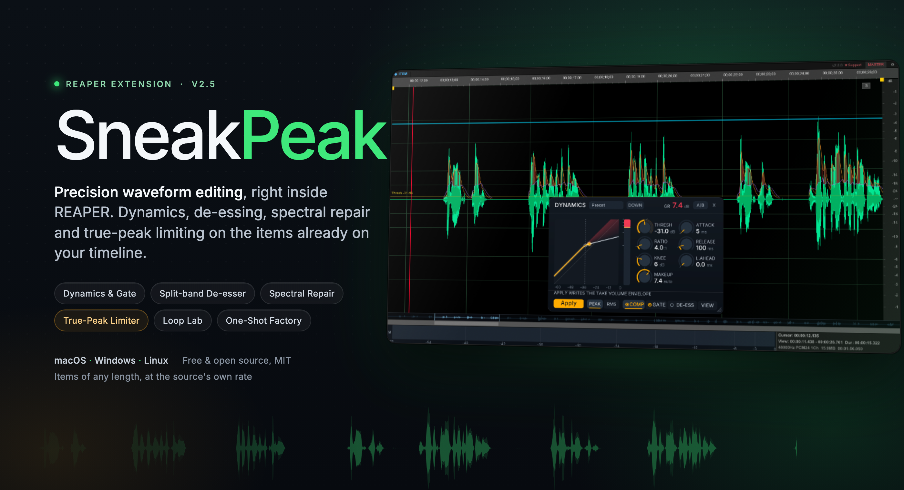
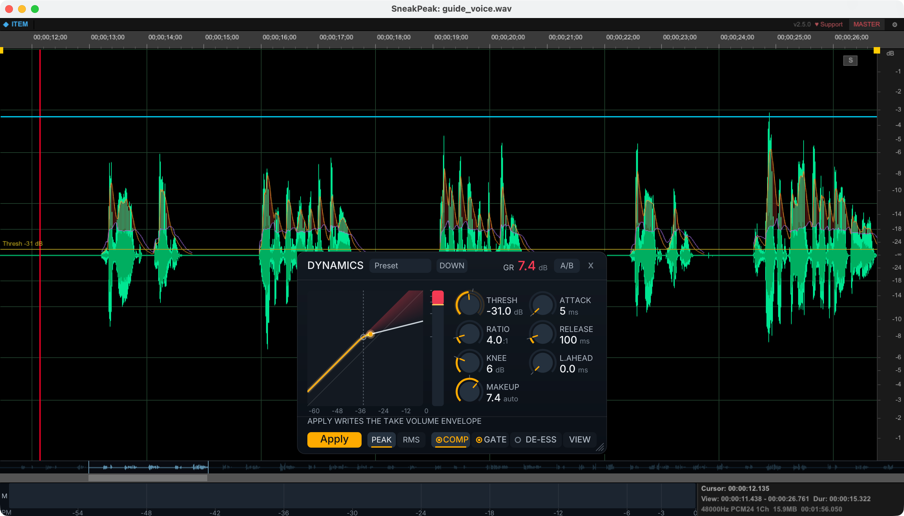
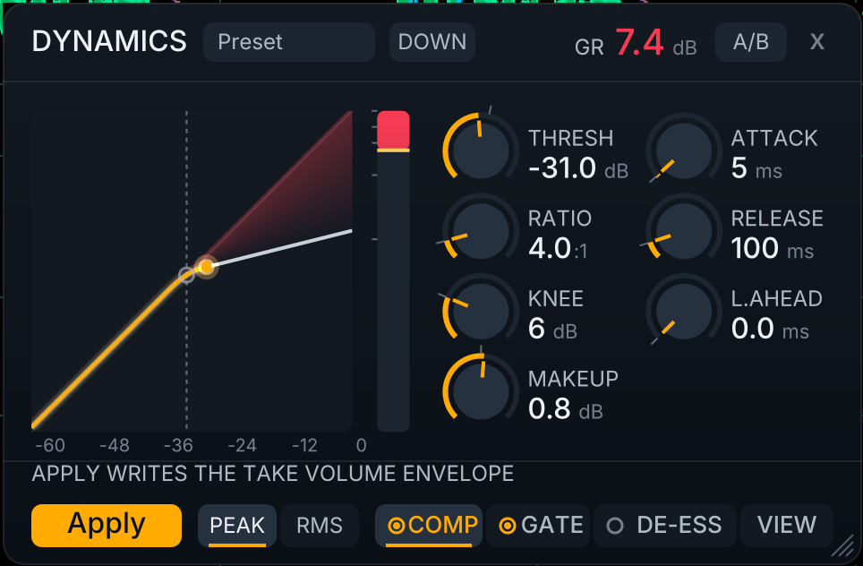
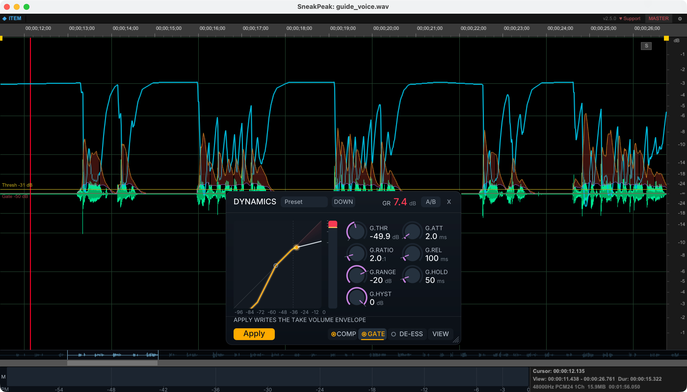
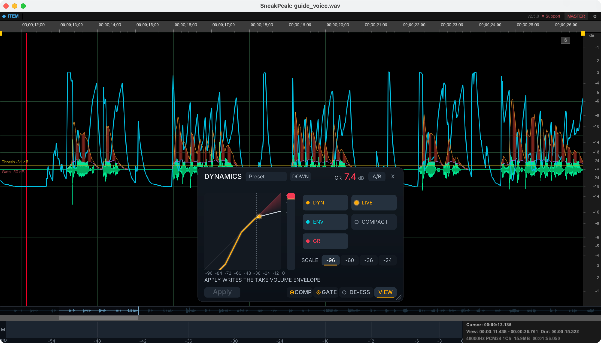
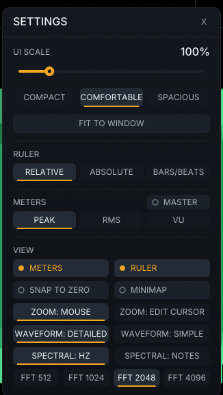

SneakPeak User Guide
Precision waveform editor for REAPER - v2.2.0

SneakPeak is a native C++ extension that adds a dedicated waveform editor to REAPER. Select an item on the timeline and SneakPeak shows you a detailed, editable waveform in a resizable floating window (dockable via right-click menu). Three editing modes cover everything from quick item inspection to multi-item track assembly, plus a Timeline View that preserves visual context after cuts. v2.0 added volume envelope editing, dynamics processing, and multiplatform support. v2.1 polished the release with automatic envelope activation, source replacement back into the timeline, hide RMS/meter toggles and an update checker. v2.2 scales the whole interface from 80% to 200% (Settings panel with DPI auto-detection), adds truthful clip indication, meters that reflect fades and envelopes, and a round of workflow polish: D/ESC hotkeys, zoom-center preference, middle-mouse panning, selection edge resizing, and stereo-preserving channel solo.
Installation
ReaPack (recommended)
- In REAPER: Extensions > ReaPack > Import repositories...
- Paste:
https://raw.githubusercontent.com/b451c/SneakPeak/main/index.xml - Extensions > ReaPack > Browse packages, search "SneakPeak"
- If Synchronize packages does not show the latest version, check (in order): (a) the URL in ReaPack > Manage repositories contains
/main/not/testing/; (b)~/Library/Application Support/REAPER/ReaPack/Cache/SneakPeak.xmlmtime is fresh after Synchronize (if not, the write silently failed - remove/re-add the repo); (c) a proxy/AV isn't strippingCache-Control: no-cache(verify withcurl -H 'Cache-Control: no-cache' <URL>); (d) if the release is less than 5 minutes old, wait - GitHub's raw CDN has a 300 s cache. - Right-click > Install, restart REAPER
Manual install
- Download the binary for your platform from GitHub Releases
- Copy to your REAPER UserPlugins folder (see table below)
- Restart REAPER
| Platform | File | UserPlugins Path |
|---|---|---|
| macOS (Apple Silicon) | reaper_sneakpeak-arm64.dylib | ~/Library/Application Support/REAPER/UserPlugins/ |
| macOS (Intel) | reaper_sneakpeak-x86_64.dylib | ~/Library/Application Support/REAPER/UserPlugins/ |
| Windows x64 | reaper_sneakpeak-x64.dll | %APPDATA%\REAPER\UserPlugins\ |
| Linux x86_64 | reaper_sneakpeak-x86_64.so | ~/.config/REAPER/UserPlugins/ |
| Linux aarch64 | reaper_sneakpeak-aarch64.so | ~/.config/REAPER/UserPlugins/ |
reaper_sneakpeak-arm64.dylib and reaper_sneakpeak-x86_64.dylib in UserPlugins, REAPER will load both and crash. Keep only the one matching your architecture.
First Launch
After installing, open SneakPeak from REAPER's action list:
- Open Actions > Show action list
- Search for "SneakPeak"
- Run "SneakPeak: Open/Close SneakPeak"
- Optionally, assign a keyboard shortcut to this action
SneakPeak opens as a floating, resizable window. You can dock it into any REAPER docker via right-click menu ("Dock SneakPeak in Docker") or leave it floating. To undock, right-click and choose "Undock SneakPeak". Your floating position, size, and dock state are remembered across sessions.
Click any media item on the timeline. SneakPeak immediately loads its waveform.
Custom Icons
SneakPeak ships with custom toolbar and track icons in three states (active, hover, inactive) at multiple scales (100%, 150%, 200%). To set up a toolbar button with the SneakPeak icon:
- Copy the toolbar icons from
docs/images/icons/toolbar_icons/to your REAPER toolbar icon folder - Right-click the REAPER toolbar, choose Customize toolbar
- Add the "SneakPeak: Open/Close SneakPeak" action and select the SneakPeak icon
Track icons (docs/images/icons/track_icons/) can be assigned to tracks via the track manager for visual identification.
Three Editing Modes
SneakPeak has three distinct modes, shown in the mode bar at the top of the window. Each mode serves a different workflow.
ITEM Mode (formerly REAPER)
The default mode. Click an item on the timeline and SneakPeak shows its waveform. All editing goes through the REAPER API - nothing is destructive. Split, gain changes, fade adjustments, and normalization all create REAPER undo points that you can reverse with Ctrl+Z.
When you cut a section from an item, SneakPeak automatically enters Timeline View - showing all surviving fragments with gaps preserved, so you can continue editing without losing context. See the Timeline View section for details.
SET Mode (Working Set)
Select multiple items on one track, then press T to lock them as a working set. SneakPeak collapses the gaps between items and shows them as one continuous waveform. You can delete fragments (with ripple edit), adjust gain on selections, and group items - all non-destructively through the REAPER API. The set persists even when you click elsewhere. Click back on any set item and it restores automatically.
Standalone Mode
Drag and drop any audio file (WAV, MP3, FLAC) into the SneakPeak window to open it in standalone mode. This is a fully destructive editor with its own undo stack (20 levels). Edit, process, and save - independent of the REAPER project. Up to 8 files can be open in separate tabs.
Destructive Editing - Where to Find It
SneakPeak does both non-destructive and destructive editing. Here is the map:
- Non-destructive (default): everything you do in ITEM / SET / Timeline modes - splits, gain, fades, envelopes, Dynamics - goes through the REAPER API and lands in REAPER's undo history. Your audio files are never touched.
- Destructive on a REAPER item: the processing entries in the right-click menu (Reverse, Normalize, DC Remove, LUFS Normalize, ...) rewrite the item's source WAV on disk after a confirmation prompt. Non-WAV sources are written to a new
name_edit.wavinstead. - Destructive standalone editor: drag a file from Finder/Explorer (or any file browser) and drop it ONTO the SneakPeak window - the mode bar switches to the orange STANDALONE tab. Cut, paste, silence, process and draw freely; nothing happens to any file until you Save (Ctrl+S) or use Replace Source in REAPER Timeline. Standalone has its own 20-level undo, independent of REAPER's.
ITEM Mode - Basics
In ITEM mode, SneakPeak follows your item selection. Click a different item on the timeline and the waveform updates. The mode bar shows "ITEM" with a blue diamond indicator.
Everything you do in this mode uses the REAPER API. The audio files on disk are never modified directly. Gain changes use the item's D_VOL parameter. Fades use D_FADEINLEN and D_FADEOUTLEN. Split uses SplitMediaItem. All reversible with REAPER's undo system.
Waveform Display
The main area shows the waveform with peak (outer envelope) and RMS (inner, darker fill) levels. A dB scale on the right side shows amplitude from 0 dB down to the noise floor.
- Green waveform - normal audio levels
- Red peaks - real clipping: flat-topped audio already clipped in the source file, or signal over 0 dB in Standalone mode (where saving will clip). The colored top covers ~30% of the peak, proportional to severity.
- Amber peaks - signal over 0 dB (full scale) in ITEM/SET/Timeline modes. A warning, not clipping: REAPER's floating-point engine has headroom, so nothing distorts unless the level still exceeds 0 dB at render or playback output.
- Center line - zero amplitude reference
- Grid lines - time grid (vertical) and dB grid (horizontal)
- Red vertical line - edit cursor position, synced with REAPER's cursor
Selection
Click and drag on the waveform to create a time selection. The selected region is highlighted. Most editing operations (cut, copy, normalize, fade, gain) work on the selection when one exists, or on the entire item when there is no selection.
Selections sync to REAPER's time selection. When you select a region in SneakPeak, the same region is highlighted on REAPER's timeline.
Zoom & Navigation
Horizontal zoom
Horizontal pan
Vertical zoom (amplitude)
Quick navigation
Segment navigation selects the target segment, syncs the cursor to REAPER, and during playback automatically jumps to the new segment for seamless auditioning.
The toolbar also has Zoom In, Zoom Out, Zoom to Fit, and Zoom to Selection buttons.
Editing (REAPER Mode)
Editing in REAPER mode is non-destructive. Operations go through the REAPER API and create undo points.
Paste is non-destructive: it writes the clipboard to a temporary WAV file, splits the item at the cursor position, shifts subsequent items right, and inserts the new audio in the gap. The pasted region is automatically selected. Works in single-item, timeline, and SET modes.
Ripple Delete removes the selection and shifts all subsequent items left to close the gap. Standard Delete preserves gaps. Cut (Cmd+X) uses ripple delete by default, matching standard waveform editor behavior.
Additional processing is available from the right-click context menu: LUFS normalization (-14 / -16), reverse, DC offset removal, and silence.
Slip content (move source under the item)
Hold Option/Alt and drag on the waveform outside a selection in plain ITEM mode to slide the take's source audio under the item - REAPER's "move item contents" edit without leaving the editor. The REAPER arrange updates live and a toast shows the slip amount; the SneakPeak waveform refreshes when you release. Each slip is a single undo point.
Scope notes: slip works on single items with non-looped sources. Inside a selection, Option+drag keeps its drag-export meaning; in SET / Timeline / Multi-item views it keeps segment-snap; on the envelope line it edits curvature.
Fades
Fade handles appear at the top corners of the waveform as small squares. They are always visible - even when no fade exists yet - so you can grab them to create new fades.
- Drag left/right - adjust fade length
- Drag up/down - adjust curve shape (curvature from -1 to +1, matching REAPER's native D_FADEINDIR/D_FADEOUTDIR)
- Hold Shift while dragging - fine mode: the length moves at 1/4 of the cursor speed for precise trims. Press or release Shift mid-drag - the fade never jumps.
- Scroll on a handle - nudge the fade length by 5% of the item per notch, or hold Cmd for 1 ms steps. No need to aim a drag at the small handle.
Fade-in and fade-out block each other - neither can be dragged past the other's position. In multi-item and SET views, fade-in targets the first item and fade-out targets the last item, each clamped to its segment's duration.
In REAPER mode, fades sync bidirectionally in real-time - change a fade in REAPER's arrange view and see it update instantly in SneakPeak, and vice versa. In standalone mode, fades are previewed visually and baked into the audio on save.
Gain Control
Press G to open the floating gain panel. A rotary knob controls volume from -60 dB to +24 dB. Hold Cmd while dragging for fine adjustment (0.1 dB per pixel instead of 0.5 dB). Double-click the knob to reset to 0 dB.
Use Up/Down arrow keys for quick +/-1 dB adjustments without the mouse. You can also scroll the mouse wheel on the gain knob for +/-0.5 dB per notch (Cmd+scroll for +/-0.1 dB fine mode). The waveform updates in real-time.
In batch mode (SET, timeline, multi-item), the knob label turns gold and shows "+0.0 dB rel" to indicate that the value is a relative offset applied to all items, not an absolute level.
Gain behavior depends on the mode:
| Mode | With Selection | Without Selection |
|---|---|---|
| REAPER | Splits at selection edges, applies D_VOL to fragment | Changes D_VOL on whole item |
| Timeline View | Splits at edges, applies D_VOL to fragment | Applies D_VOL to all fragments |
| Multi-item | Splits at edges, applies D_VOL across segments | Applies D_VOL to all items |
| SET | Splits at edges, applies D_VOL with 10ms crossfade | Applies D_VOL to all set items |
| Standalone | Destructive gain with crossfade at edges | Destructive gain on entire file |
In all modes, you see a real-time visual preview of the gain change on the waveform while dragging the knob. With a selection, only the selected region is previewed. The actual change is applied when you release.
Split
Press S to split the item at the edit cursor position. If you have a selection, the item is split at both selection edges. This uses REAPER's native SplitMediaItem and creates an undo point.
SET Mode - Overview
Working Set mode lets you treat multiple items on a track as a single continuous piece of audio. Gaps between items are collapsed visually. You can cut, split, adjust gain, and group items - all non-destructively. It is designed for dialogue editing, podcast assembly, and any workflow where you need to work across multiple items on one track.
Creating a Working Set
- On REAPER's timeline, select the items you want to work with (all must be on the same track)
- Press T or use the REAPER action "SneakPeak: Toggle Track View"
- The mode bar changes to SET (green). Items appear as one continuous waveform.
You can also assign a custom keyboard shortcut to the "SneakPeak: Toggle Track View" action in REAPER's action list.
Editing in a Working Set
Delete with ripple edit
Select a region and press Delete or E. The selected audio is removed and all items after the cut point are pulled left to close the gap. This works across item boundaries - if your selection spans two items, both are trimmed correctly.
Split
Press S to split at the cursor position. The set refreshes to show the new item structure.
Undo
Press Ctrl+Z to undo. The working set refreshes to reflect the undone state. You stay in SET mode throughout.
Gain on Selection (SET Mode)
This is one of the most powerful features in SET mode. Select a region, open the gain panel (G), and adjust the knob. Here's what happens:
- While you drag the knob, you see a visual preview on the waveform (only the selected region changes)
- When you release the knob, SneakPeak splits the items at the selection edges
- The isolated fragment gets the new volume (D_VOL)
- A 10ms overlap is created with neighboring items so REAPER generates an automatic crossfade
- The working set reloads to reflect the change
Without a selection, gain applies to all items in the set uniformly.
Grouping Items
After editing in SET mode, you may have many small items from splits and gain changes. Grouping lets you treat them as one unit on the timeline.
Right-click > Group. All items in the working set (or in the selection range, if you have one) are assigned the same REAPER group ID. On the timeline, clicking one item selects all grouped items. Moving one moves all.
The group is visualized as a colored bar below the ruler in SneakPeak. Different groups get different colors.
To ungroup, right-click > Group again (it toggles). The checkmark indicates the current state.
Dormant State & Auto-Restore
The working set is persistent. When you click on a different item outside the set, SneakPeak switches to normal REAPER mode for that item. But the set is not destroyed - it goes dormant.
Click back on any item that belongs to the working set, and SneakPeak automatically restores the SET view. No need to press T again.
To permanently exit the set: press T again, Escape, or use the context menu.
Timeline View - Overview
Timeline View activates automatically when you cut a section from an item in REAPER mode. Instead of showing only the remaining left portion, SneakPeak displays all surviving fragments with gaps preserved - matching the REAPER timeline 1:1. Dark background regions mark the gaps where audio was removed.
This lets you continue editing across all fragments without losing visual context. Your zoom position is preserved through cuts, and you can make multiple edits in succession.
Editing Fragments
In Timeline View, all standard editing operations work across fragments:
- Selection - click and drag to select across any fragment, including spanning gaps
- Delete (E) - removes the selected region from any overlapping fragment
- Split (S) - splits fragments at the cursor position
- Undo (Ctrl+Z) - reverses the last operation and refreshes the view
Gain on Fragments
The gain knob works on all fragments in Timeline View:
- Without selection - adjusts volume on all fragments simultaneously (instant, no reload)
- With selection - splits at selection edges and applies gain only to the selected region
- Option+click a fragment to instantly select its full range, then adjust gain without creating new splits
Live visual preview shows the gain change in real-time while dragging the knob. When you release, the change is applied to the REAPER items and the waveform updates seamlessly.
Entering & Exiting
Entering: Timeline View activates automatically when a delete or selection-aware gain operation in REAPER mode produces two or more fragments from the same item.
Exiting: Click any single item on the REAPER timeline. SneakPeak exits Timeline View and loads that item normally. You can also press T to enter SET mode if you want gap-collapsed editing instead.
Standalone Mode - Overview
Drag any audio file into the SneakPeak window to open it in standalone mode. The mode bar shows an orange "STANDALONE" label. Up to 8 files can be open simultaneously in separate tabs.
Standalone mode is fully destructive - operations modify the audio data in memory. Each file has its own undo stack (20 levels). Changes are not saved to disk until you explicitly save.
File Management
- Open a file - drag and drop WAV, MP3, or FLAC into the window
- Switch tabs - click a tab in the mode bar
- Close a tab - click the X on the active tab. If the file has unsaved changes, you'll be asked to save first.
- Return to REAPER mode - click the "REAPER" tab (appears when you have an item selected)
An asterisk (*) on the tab name indicates unsaved changes.
Editing (Standalone)
All the same shortcuts work: Ctrl+X/C/V for clipboard, Delete for removing audio, Ctrl+N for normalize. The difference is that these operations modify the audio data directly.
Delete in standalone mode removes the selected samples and splices the audio together with a short crossfade at the join point to avoid clicks.
Playback: press Space to play. If the cursor is inside a selection, it plays the selection. If the cursor is outside the selection (e.g., after clicking the ruler), it plays from the cursor position. This lets you preview audio before or after a selection without losing it. Press Space again to stop.
Save Workflow
Smart Save behavior:
- WAV file - first save asks "Overwrite original?" Yes overwrites, No opens Save As
- MP3/FLAC file - automatically creates
filename_edit.wavnext to the original (never overwrites non-WAV originals) - Previously saved - saves silently to the same path
Any pending fade previews are baked into the audio data at save time.
Replace Source in REAPER Timeline
After editing a file in standalone mode, right-click > Replace Source in REAPER Timeline. One click saves the edited content (using Smart Save rules above) and swaps P_SOURCE on every take in the project whose file path matches the standalone's original path. All referenced items refresh their waveforms immediately in REAPER's arrange view.
- Multiple references - if the same file is used on several tracks, all matching takes are updated in one pass.
- Case-insensitive on Windows; exact match on macOS/Linux.
- Single undo - Ctrl/Cmd+Z reverts every replaced take at once.
- No references - toast reports "No items in timeline reference this file" (e.g. when the standalone file was dragged from outside the project).
Drag Export
Click inside a selection and drag outside the SneakPeak window to export audio to the REAPER timeline or other applications.
Two drag modes:
- Drag outside window (no modifier) - export starts when the mouse leaves the SneakPeak window area. Ideal for dragging onto the REAPER timeline.
- Alt/Option + drag - immediate export on 5px threshold. Use this for dragging to Finder or external applications.
What gets exported:
- With selection - exports the selected region as a WAV file
- Full file (clean) - references the original file (no copy created)
- Full file (dirty) - auto-saves first, then drags the saved file
Drop the dragged file onto REAPER's timeline to insert it as a new item.
Volume Envelope Editing
SneakPeak displays the take volume envelope as a cyan curve overlaid on the waveform. The envelope is fully editable - add, move, delete, and draw points directly on the waveform without switching to REAPER's envelope lanes. The waveform shape always reflects the effect of the envelope in real-time.
Enable the overlay via right-click > View > Show Volume Envelope. If the take does not yet have an active volume envelope, SneakPeak creates and activates one automatically (toast: "Volume envelope enabled"). For multi-take items, auto-activation only runs when the take SneakPeak is displaying is the item's active take.
Point Editing
Available curve shapes: Linear, Square, Slow start/end, Fast start, Fast end, Bezier. The shape controls interpolation between the clicked point and the next point.
Curvature editing: hold Alt and drag vertically on a segment to bend it - from "fast then gentle" to "hold then dive" (tension -1..+1, live readout at the cursor, Cmd for fine control). A linear segment becomes Bezier automatically on the first curvature drag. Right-click the segment's left point and choose Reset curvature to return to the neutral curve. Curves render identically in SneakPeak and the REAPER arrange view.
Freehand Drawing
Hold Cmd and drag on the envelope line to draw points freehand. Points are created every 4 pixels along your mouse path, and any existing points in the drawn range are automatically removed to prevent glitches. This is ideal for quickly sculpting envelope shapes.
Multi-Select & Dense Points
Shift+click on a point to toggle its selection (add to or remove from multi-selection). Drag any selected point to move all selected points together. Delete or E removes all selected points at once.
Selection rectangle: Cmd+drag on an empty area (not on the envelope line) to draw a selection rectangle - a frosted translucent overlay with a cyan border. All points inside are selected. Shift+rectangle adds to the existing selection.
Dense point interaction: After Apply Dynamics creates many envelope points (>100), individual points are hidden for performance. Use Cmd+drag to draw a reveal rectangle - points within become visible and fully interactive. The reveal range is time-based and survives zoom/scroll. Click outside the revealed zone to clear it.
Dynamics Processing
SneakPeak includes a built-in dynamics processor that analyzes your audio and writes volume envelope points to achieve compression and gating. Instead of real-time DSP, it works offline - analyzing the audio buffer and generating precise envelope automation. This means zero CPU cost during playback.
The dynamics engine visualizes two curves on the waveform:
- Orange curve - original amplitude envelope (attack/release follower of the audio peaks)
- Purple curve - post-compression level (what the audio will sound like after applying)
- Yellow line - threshold level
- Red line - gate threshold (when gate is active)
- Red shading - gain reduction fill between original and compressed curves (toggle with [GR])
Open the dynamics panel from right-click > Process > Dynamics Panel. SneakPeak auto-activates the take volume envelope on first open if it isn't already enabled - no manual REAPER setup needed.

Dynamics Panel
The dynamics panel is an inline floating control surface at the bottom of the waveform area with 15 real-time controls across the COMP and GATE tabs. The mode button in the panel header cycles DOWN / UP / BOTH: DOWN is a classic compressor (reduce loud material above the threshold), UP is an upward compressor (boost quiet material below the threshold - leveling quiet speech without touching the peaks), and BOTH does the two at once in a single pass - a full leveler that pulls everything toward the threshold, ideal for "lift the quiet, tame the loud" voice work. In Up/Both the GR readout turns amber when the net gain is a boost, auto-makeup acts as a trim, and the boost is capped by M.Boost and floored at the gate threshold when the gate is on.
| Slider | Range | Description |
|---|---|---|
| Thresh | -60 to 0 dB | Compression threshold - signals above this are compressed |
| Ratio | 1:1 to Inf:1 and beyond | Compression ratio; past 20:1 the knob approaches Inf:1 (true limiting, detent) and continues into over-compression (negative ratios - reduction exceeds the overshoot) |
| Knee | 0 to 30 dB | Soft knee width - gradual transition into compression; in BOTH mode it sets the gentle "leave-alone" band around the threshold |
| L.ahead | 0 to 20 ms | Lookahead - catch transients before they arrive |
| Attack | 0.1 to 200 ms | How fast compression fades in |
| Release | 5 to 2000 ms | How fast compression fades out |
| Makeup | -24 to +24 dB | Gain compensation (auto-calculated from average GR); negative values trim - the useful direction after an Up-mode boost |
| G.Thr | -90 to 0 dB, Off | Gate threshold - signals below this are attenuated; drag fully left (or Cmd/Ctrl-click) for Off |
| G.Ratio | 1:1 to 10:1 | Gate ratio - attenuation slope below the threshold (2:1 = gentle expander, higher = harder gate) |
| G.Range | -80 to 0 dB | Gate range - maximum attenuation when gate is closed |
| G.Hyst | -24 to 0 dB | Gate hysteresis - the gate stays open this far below the threshold, preventing chatter on hovering material |
| G.Att | 0 to 50 ms | Gate attack - how fast the gate opens |
| G.Rel | 10 to 1000 ms | Gate release - how fast the gate closes |
| G.Hold | 0 to 500 ms | Gate hold time - minimum fully-open time after the level exceeds the threshold |
| M.Boost | 0 to 24 dB | Up mode only: maximum boost applied to quiet material (caps the noise-floor lift) |

Hold Cmd/Ctrl while dragging a slider for fine mode (1/5th sensitivity). The Apply button writes the computed compression curve as REAPER volume envelope points. Each Apply is non-destructive and idempotent - existing points are cleared before writing new ones.
Toggle Peak/RMS in the panel to switch detection mode. RMS provides smoother, less aggressive curves suited for music. Peak is more responsive, better for speech.
Press D to open or close the panel from the keyboard; Escape also closes it (restoring the envelope first if A/B bypass was engaged). The panel scales with the global UI scale and can additionally be resized with the grip in its bottom-right corner.

The GATE tab taming breaths between dialogue phrases: yellow threshold and gate lines on the waveform, the computed envelope (cyan) and detector curves drawn live, gain reduction read-out in the panel header.
Live Mode
Click the [Live] toggle (green when active) to enable real-time envelope writing. In Live mode, every slider change immediately writes envelope points to REAPER - the waveform updates in real-time as you drag. No need to click Apply.
A single undo block wraps each drag gesture, so Cmd+Z reverts the entire adjustment. When Live is active, the Apply button is grayed out (it would be redundant).

Gate
The noise gate operates on the post-compression, pre-makeup level. This is specifically designed for breath reduction in speech/podcast audio: compression boosts quiet passages (including breaths), and the gate catches those boosted breaths and pulls them back down - while the makeup gain, an output-only stage, never shifts the gate's operating point.
The gate is a full downward expander with seven parameters. G.Thr sets where it engages (down to -90 dB; drag fully left or Cmd/Ctrl-click for Off). G.Ratio sets how hard it attenuates below the threshold: 2:1 is a gentle expander, 10:1 is effectively a hard gate. G.Range caps the attenuation (down to -80 dB; the -20 dB default keeps things natural). G.Hyst adds hysteresis - once open, the gate stays open until the level falls this far below the threshold, which stops rapid chatter on material hovering at the threshold (the violet band on the transfer plot). G.Att / G.Rel set how fast the gate opens and closes, and G.Hold keeps it fully open for a minimum time after each opening.
The gate threshold is shown as a dim red horizontal line on the waveform. GR shading and the purple compression curve include gate reduction. If you drag G.Thr below the current transfer-plot floor, the plot scale expands automatically so the gate node stays visible (floor selectable down to -96 dB in the VIEW tab).
Per-stage bypass: the small power dots inside the COMP and GATE tab buttons switch each stage off for auditioning (amber = active, grey = bypassed) - with Live mode on you hear the change immediately. Bypassing the compressor also mutes its makeup gain. Bypasses are audition controls like A/B: they are never saved into items or presets and reset when the panel opens.
De-Esser
The DE-ESS tab adds a third processing stage: a wideband de-esser for taming sibilance ("s", "sh", "ts") in speech and vocals. A band-filtered detector measures energy in the sibilance band; when it crosses the threshold, gain reduction is written into the same envelope as the compressor and gate. Enable it with the power dot inside the DE-ESS tab button (it is saved with your item settings, unlike the audition bypasses).
Freq centers the detector (2-16 kHz; sibilance typically sits at 3-6 kHz for male and 6-8 kHz for female voices) and Width sets the band-pass width. The BP / HP switch picks the detector shape: band-pass listens to a specific band, high-pass (24 dB/oct) reacts to everything above Freq. D.Thr / D.Ratio / D.Att / D.Rel work like their compressor namesakes but on the band level, and D.Range hard-limits the reduction (default -10 dB) so the ducking always stays polite.
LISTEN paints an amber lane along the top of the waveform over every span the de-esser is reducing by more than 1 dB - the offline equivalent of a sidechain-listen switch, and the quickest way to spot false triggers (cymbals, bright vowels) before applying.
Presets
Click the preset name in the panel title bar to open a dropdown with 8 built-in presets:
| Preset | Use Case |
|---|---|
| Default | Flat - no processing (all sliders at neutral) |
| Gentle Leveling | Light 2:1 compression with wide knee and RMS detection |
| Voice/Podcast | 4:1 compression with gate at -45 dB for speech cleanup |
| Broadcast | 6:1 aggressive compression with fast attack and strong gate |
| De-breath | Light compression + aggressive gate targeting breath removal |
| Music Bus | 2:1 slow attack for mix bus glue |
| Upward Leveling | Up mode: gentle 2:1 RMS lift of quiet passages, gate on so the noise floor stays down |
| De-Ess Vocal | Voice/Podcast compression + wideband de-esser at 6 kHz, 4:1, -10 dB range |
When you manually adjust any slider, the preset name changes to "Preset" (custom). Settings are automatically saved per-item via REAPER's P_EXT system - reopen the dynamics panel on the same item and your settings are restored.
A/B Bypass
Click the [A/B] toggle (yellow when active) to bypass the volume envelope in REAPER. This disables the envelope so you hear the original unprocessed audio - an instant before/after comparison. The waveform also renders without the envelope effect while bypassed. Bypass is automatically restored when you close the dynamics panel.
Spectral View
Toggle the spectrogram via right-click > View > Spectral View. A resizable pane appears below the waveform showing a time-frequency representation of the audio using the magma color scheme (dark = silence, bright = energy).
The spectrogram is computed asynchronously (2048-point FFT) when an item loads. A progress overlay shows computation status. After computation completes, the display updates instantly.
Click and drag on the spectrogram to select a time x frequency rectangle (a dashed marquee with a frosted interior) - the standard spectral-editor selection and the target for Spectral Repair. The time axis stays in sync with the waveform selection. Grab any edge or corner of the rectangle to fine-tune it (the cursor shows resize arrows over the grab zones). Hold Alt and drag vertically to select a full-width frequency band instead, and Shift+click to extend the time range.
A draggable splitter between the waveform and spectrogram lets you adjust the space distribution (15% to 85%).
Frequency grid and scale: faint horizontal reference lines run across the spectrogram at the labeled frequencies, so you can place a sound (hum at 50 Hz, sibilance around 6-8 kHz) at a glance. Settings > View > Spectral: Hz / Notes switches the scale and the grid between Hz labels and note names (A0-A9 octaves, with A4 = 440 Hz as the bold reference) - handy for identifying the pitch of a tone or resonance before healing it.
Spectral Repair (Standalone mode)
In Standalone mode the spectral selection becomes an editing tool. Drag a rectangle directly on the spectrogram (time x frequency marquee), then right-click:
- Process > Heal Selection - rebuilds the selected time x frequency rectangle from the audio around it (per-frequency interpolation across the selection). Replace (100%) fully replaces the region toward the surrounding context; the Attenuate strengths (75/50/25%) pull it down more gently. Healing only ever reduces energy, so content quieter than its surroundings is left alone - and re-applying iteratively is normal. Requires both a time selection and a frequency band; limited to 10 s selections.
- Process > Repair Clicks in Selection - detects and removes clicks and pops inside the time selection with sample accuracy (autoregressive detection and interpolation; no frequency band needed). Bursts longer than 23 ms are skipped and reported. Limited to 4 s selections.
Both are destructive edits to the loaded audio in memory: undo with Ctrl+Z, redo with Ctrl+Shift+Z, and nothing touches the disk until you save. A toast reports what was healed or repaired, and the spectrogram recomputes automatically.
Loop Lab (Seamless Loops)
Building seamless loops (ambiences, engines, UI hums) for game engines and samplers starts with finding the right region and hearing the seam. In Standalone mode, right-click > Loop Lab... opens the Loop Lab panel - the whole loop workflow lives there: live START / END / LENGTH readouts, the finder's candidate list, loop and seam transport, weld and smpl controls. The panel remembers its position; drag its empty area to move it.
- SET FROM SELECTION (also a direct right-click item, Set Loop From Selection) turns the current time selection into the loop: yellow brackets and a strip mark the region on the ruler (with the ruler hidden they sit on the waveform top, like markers). Drag a bracket to fine-tune either end - snap-to-zero-crossing applies when enabled in Settings, and the panel readouts follow live.
- PLAY LOOP plays the region wrapping seamlessly from end back to start - if the seam clicks or thumps, you will hear it exactly as a game engine would play it. The audition follows bracket drags and loops until you stop it (the pill again, or Space).
- FIND scans the file in the background for seam candidates (loop endpoints on rising zero crossings, ranked by how well the loop's tail continues into its head, with a timbre check as tie-break). The top 5 fill the panel's candidate list - timecodes, length and score per row - and appear as numbered yellow pins on the ruler. Click a row (or a pin) to set the loop and audition it immediately; the active candidate stays highlighted. On stochastic ambiences (birds, rain, wind) the search switches to texture candidates - points where the averaged spectrum and energy level match (waveforms never repeat there, so perceptual continuity is the right criterion) - tagged TEX in the list: weld the seam after choosing.
- PLAY SEAM - for long loops: plays just the last ~2 s, wraps into the first ~2 s, pauses briefly and repeats, so you judge the seam every few seconds instead of sitting through the whole loop.
- WELD bakes an equal-power crossfade over the end of the loop, blending it into the material just before the loop start - after welding, the wrap is continuous by construction. The crossfade length sits next to the button (drag or scroll it; 5-500 ms, default 50). Destructive with undo; a running audition picks up the welded seam immediately. Requires that much audio before the loop start.
- WRITE SMPL ON SAVE (on by default): saving writes a standard
smplsustain loop (forward, infinite) into the WAV - Unity, FMOD, Wwise and samplers read it natively. Loading a WAV that already carries loop points shows them as the loop region. - CLEAR removes the region. The loop is remembered per file tab.
smpl loop when enabled.
One-Shot Factory
Preparing game-ready one-shots (footsteps, impacts, UI sounds) is the same three steps every time: trim the silence, kill the trigger clicks with tiny edge fades, hit the loudness target. Right-click > One-Shot Factory... does the whole chain in one Run - for one file or a whole batch of variations. It works on a Standalone file or directly on a selected timeline item (plain ITEM mode): design the sound on the timeline, select the item, run the Factory - the assets land next to the item's media file. The item and its source are never modified.
- TRIM - drop silence below the threshold (default -60 dBFS), keeping a small padding (default 10 ms) around the sound.
- Fade In / Fade Out - edge micro-fades (defaults 5 ms / 20 ms, the industry click-killers).
- Normalize - OFF, PEAK (dBFS), LUFS (integrated, custom target, measured by REAPER's own engine) or TP SAFE (the Hard Limiter at your dBTP ceiling - the game-asset default).
- SLICE - WHOLE exports the file as one asset; REGIONS makes each region a variation (with no regions, markers act as split points); SILENCE auto-splits on gaps longer than 150 ms below the trim threshold (slices under 50 ms are dropped, and each slice keeps its padding without bleeding into a neighbour). Record ten footsteps in one take, add nothing, and SILENCE finds the ten slices.
- NAME - the naming pattern for the written files:
{name}= source basename,{nn}= 01-based zero-padded number; default{name}_{nn}. Click the box to edit.
While the panel is open, the waveform previews the prep live: dimmed zones show what will be cut, amber lines mark every slice that will be written and diagonal ramps show the edge fades - all following the knobs, so you can tune the threshold until the split is exactly right.
Run writes each slice through the full chain next to the source file (existing files are never overwritten - collisions get _x appended). The audio loaded in the editor is not modified. Long batches show progress in the title bar and the toast sums up, e.g. "14 files written". Knobs work like the other premium panels; settings persist.
Hard Limiter (True Peak)
A transparent lookahead brickwall limiter for final asset loudness - push a sound effect or a mixed file into a hard ceiling that is guaranteed on true peaks (inter-sample peaks measured BS.1770-style), not just sample values. Game platforms commonly require assets to stay at or below -1 dBTP; this is the tool for that last step.
Open it in Standalone mode via right-click > Process > Hard Limiter... The panel gives you:
- Gain (0 to +24 dB) - how hard you push into the ceiling.
- Ceiling (-12 to 0) - the output limit, in dBTP with True Peak on, dBFS with it off.
- Attack (0.1-30 ms) - the lookahead/smoothing window. Longer = softer, more transparent; shorter = tighter, louder.
- Hold (0-50 ms) and Release (10-1000 ms) - how the gain recovers after a peak. Long release = smoothest, short = loudest.
- TRUE PEAK - on (default) limits inter-sample peaks; off limits plain sample peaks.
- LINK - on (default) applies one shared gain to all channels (keeps the stereo image); off limits each channel independently (hidden for mono files).
While the panel is open, a red band along the top of the waveform previews the gain reduction over time (deeper = more limiting; full band depth = 12 dB), and the readouts show the input peak, the predicted output peak and the maximum reduction. The preview recomputes as you turn knobs. Knobs work like the Dynamics panel: drag vertically, scroll to nudge (Cmd = fine), double-click to type a value, Cmd/Ctrl-click to reset.
The preset box holds four factory starting points - Game Asset -1 dBTP (the defaults), Master -0.3 dBTP, Brickwall 0 dBFS (sample-peak mode) and Loud + Proud (+8 dB push) - plus your own: Save preset as... stores the current knobs under a name (saving to an existing name overwrites it), saved presets appear in the same dropdown and can be removed via Delete preset. Apply is a destructive edit with full undo: whole file, or just the time selection (with short handoff ramps at the selection edges). On long material (podcasts, live recordings) Apply runs in the background - the title bar shows "Limiting... N%" and the window stays fully responsive; if you edit the audio before it finishes, your edit wins and the limiter result is discarded with a note. The toast reports the achieved output peak and the maximum gain reduction.
Multi-Item View
Select two or more items on the timeline. SneakPeak shows all of them together on an absolute timeline. Dark background regions mark gaps between items. Right-click to choose a display mode:
- Mix (Sum) - all items mixed into a single waveform, like hearing them all at once
- Layered (per Item) - each item drawn in a different color, overlapping. An 8-color palette provides clear visual separation.
- Layered (per Track) - items grouped and colored by their parent track
Toggle Show Join Lines in the context menu to see vertical lines at crossfade points between items.
Editing in Multi-Item View: Delete and gain operations work across item boundaries. Select a region spanning multiple items and press E to delete, or use the gain knob with a selection to apply volume changes. Use Option+click to snap selection to a specific item's boundaries for precise gain re-adjustment.
Metering
The bottom panel shows stereo level meters (L/R) with peak hold indicators. Right-click the meter area to switch between three modes:
| Mode | Behavior |
|---|---|
| Peak (PPM) | True peak metering. Instant attack, slow decay. Peak hold marks. |
| RMS (AES/EBU) | RMS loudness with 300ms integration window per AES/EBU standard. |
| VU | Classic VU-meter ballistics. Slow attack, slow decay. |
Enable Master Output from the meter context menu to read levels from the master track instead of the current item. This lets you monitor the master bus while editing individual items.
Waveform style / Hide Meters
Two Settings panel controls (VIEW section) let you simplify the display when you want more waveform area:
- Waveform style - Detailed (default) draws the peak waveform with a darker RMS band inside it; Simple draws a single-colour waveform (peaks only). Useful on dense stereo material where the RMS fill obscures detail, or if the two-tone look is not to your taste. Red/amber clip marking is drawn in both styles.
- Meters (default on) - when off, the entire bottom panel (meters + info) collapses to zero height and the waveform expands into that space. The scrollbar stays at the bottom.
Both settings persist across REAPER sessions via ExtState.
Minimap
Toggle via right-click > View > Minimap. A compact overview of the entire waveform appears above the scrollbar. It shows the full duration at a glance with a highlighted region indicating your current view.
- Click - center the view on that position
- Drag - continuously scroll through the duration
- Drag the top edge - resize the minimap height (saved between sessions)
Markers
SneakPeak integrates with REAPER's marker system. Markers appear as colored triangles in the ruler area.
Double-click a marker in the ruler to edit its name and color. Right-click a marker for edit/delete options. Drag a marker left or right to move it.
Master Mode
Click the MASTER label in the top-right corner of the mode bar when no item is selected. SneakPeak shows a rolling waveform of the master track output - a real-time visualization of what's coming out of the master bus.
This is a view-only mode. No editing operations are available. Use it for monitoring during mixing or mastering.
You can also bind a keyboard shortcut to the REAPER action "SneakPeak: Toggle Master Track View" to switch this view without reaching for the mouse.
Ruler & Time Display
The ruler at the top shows time positions. Three modes are available via right-click > View:
- Ruler: Relative Time - time from item start (00:00:00). Default for single items.
- Ruler: Absolute Time - REAPER timeline position. Default in SET mode.
- Ruler: Bars & Beats - measure and beat numbers synced with REAPER's tempo map. Handles tempo changes and time signature changes. Major ticks at measure boundaries, minor ticks at beats. At high zoom, individual beats are labeled (e.g., "45:2", "45:3").
The selected ruler mode persists across sessions. In SET mode, absolute time is enabled by default so you can correlate positions between SneakPeak and the REAPER timeline.
The ruler can also be hidden entirely (Settings > View > Ruler) to give the waveform the extra rows - handy in a small docked window. Markers and regions stay visible, drawn over the top of the waveform; show the ruler again to drag or double-click-edit them.
The bottom info panel shows cursor position, selection range, view range, sample rate, bit depth, channels, and file size.
Settings & UI Scale
Click the gear icon in the mode bar (or right-click > Settings...) to open the Settings panel - the home for SneakPeak's interface preferences. Click anywhere outside the panel or press Escape to close it.

UI Scale
The whole interface - fonts, toolbar, ruler, meters, panels and every click target - scales between 80% and 200% from a single slider, with a live preview while you drag. Quick options:
- Density presets - Compact (90%), Comfortable (100%), Spacious (125%).
- Fit to Window - picks the largest scale at which all chrome still fits the current window.
On first run SneakPeak suggests a scale from your system DPI (Windows display scaling, Linux GDK scale). Once you set a scale manually it is never overridden - though on Windows, dragging the floating window across monitors with different DPI will keep suggesting a matching scale until you do.
Preferences
- Ruler - Relative / Absolute / Bars & Beats.
- Meters - Peak / RMS / VU ballistics, plus the Master Output source toggle.
- View - Meters, Ruler (hide for extra waveform height; markers fall back onto the waveform), Snap to Zero-Crossing, Minimap, the wheel-zoom anchor (Zoom: Mouse or Zoom: Edit Cursor - whether scroll zoom centers on the mouse position or the edit cursor), the Waveform style (Detailed = peak + RMS band, Simple = single-colour peaks), and the Spectral scale (Hz or note names).
The Dynamics panel follows the global scale too, multiplied by its own corner resize grip, so it grows with the rest of the UI while staying independently adjustable.
Over 0 dB & Clipping
SneakPeak distinguishes two different things that often get lumped together as "clipping":
- Red - real clipping. Flat-topped runs of samples at digital full scale in the source audio: distortion that has already happened in the file. This is detected on the raw data, so it stays red even if you turn the item down. In Standalone (destructive) mode, signal over 0 dB also shows red, because saving to a fixed-point WAV will clip it.
- Amber - over 0 dB (warning). In ITEM, SET and Timeline modes the signal lives in REAPER's floating-point engine, which has effectively unlimited headroom. Levels above 0 dB are not distorted and will not distort as long as something later in the chain (item volume, track fader, master) brings them back under full scale before render or playback output. Amber marks where that attention is needed.
The colored portion covers the top ~30% of the peak height, proportional to severity, so it stays visible even when zoomed out. Small tick marks in the matching color also appear at the top and bottom of the waveform area on affected columns.
0 dB reference line: when you zoom out vertically (scroll on the dB scale), full scale moves inside the view and a dark red line marks 0 dB, with the dB scale showing positive values above it - so you can inspect and edit material above full scale with a clear view of the clip boundary.
Did You Know?
Ten things people miss on the first pass:
- Destructive editing lives in two places - the right-click processing entries rewrite an item's source file (after a confirmation), and dropping an audio file onto the SneakPeak window opens the fully destructive Standalone editor. The orientation section has the full map.
- Press D to open the Dynamics panel, and ESC to close any panel.
- Scroll on knobs. The gain knob and every dynamics knob respond to the mouse wheel (Cmd = fine steps), and double-clicking a dynamics knob lets you type an exact value.
- Fade handles take the wheel too - scroll to nudge a fade length (Cmd = 1 ms steps), or hold Shift while dragging for a 1/4-speed fine trim.
- Option/Alt+drag does four jobs - on the envelope line it bends the curve, inside a selection it starts a drag export, outside a selection (ITEM mode) it slips the item contents, and in SET/Timeline/Multi-item it snaps the selection to a segment.
- Middle-mouse drag pans the view, and a selection can be resized by grabbing its edge (the cursor shows when you are on it).
- The window is yours to declutter - Settings > View can hide the ruler and the meters, switch the waveform to a single-colour Simple style, and choose whether wheel zoom centers on the mouse or the edit cursor.
- Every toolbar command is a REAPER action - search "SneakPeak" in the Action List and bind any shortcut you like.
- M drops a marker, Shift+M makes a region from the selection - and you can drag a selection out of the window to export it as a file.
- Click the version label in the mode bar to check for updates.
All Keyboard Shortcuts
| Shortcut | Action | Mode |
|---|---|---|
| Space | Play / Stop (from cursor or selection) | All |
| T | Toggle Working Set mode | REAPER |
| S | Split at cursor / selection | REAPER, SET |
| G | Toggle gain panel | All |
| D | Toggle Dynamics panel | REAPER, SET, Timeline |
| M | Add marker at cursor | REAPER |
| Shift+M | Add region from selection | REAPER |
| E | Delete selection (gap preserved) | All |
| Shift+E | Ripple Delete (closes gap) | REAPER, SET, Timeline |
| Delete | Delete selection (gap preserved) | All |
| Shift+Delete | Ripple Delete (closes gap) | REAPER, SET, Timeline |
| Ctrl+Delete | Silence selection | All |
| Up | Gain +1 dB | All |
| Down | Gain -1 dB | All |
| Option+Right | Next segment (select + scroll) | SET, Timeline, Multi |
| Option+Left | Previous segment | SET, Timeline, Multi |
| Escape | Close Settings/Dynamics panel / exit working set / clear selection / stop | All |
| Home | Go to item start | All |
| End | Go to item end | All |
| Tab | Next marker | REAPER |
| Shift+Tab | Previous marker | REAPER |
| Ctrl+A | Select all | All |
| Ctrl+X | Cut (copy + ripple delete) | All |
| Ctrl+C | Copy | All |
| Ctrl+V | Paste (non-destructive insert) | REAPER, SET, Timeline |
| Ctrl+Z | Undo | All |
| Ctrl+Shift+Z / Ctrl+Y | Redo | All |
| Ctrl+N | Normalize (peak) | All |
| Ctrl+S | Save | Standalone |
| Ctrl+Shift+S | Save As | Standalone |
| Click on envelope line | Add envelope point | ITEM, SET, Timeline |
| Cmd + Drag on line | Freehand envelope drawing | ITEM, SET, Timeline |
| Cmd + Drag on empty | Envelope selection rectangle | ITEM, SET, Timeline |
| Shift + Click point | Toggle envelope point selection | ITEM, SET, Timeline |
| Double-click point | Delete envelope point | ITEM, SET, Timeline |
| Right-click point | Curve shape menu | ITEM, SET, Timeline |
Mouse Reference
| Action | Where | Effect |
|---|---|---|
| Click | Waveform | Place cursor, sync to REAPER |
| Click + Drag | Waveform | Create time selection |
| Shift + Click | Waveform | Extend selection |
| Drag outside window | Inside selection | Drag export to REAPER timeline |
| Alt + Click + Drag | Inside selection | Immediate drag export (Finder/external) |
| Option + Click | Segment (SET/timeline/multi) | Snap selection to segment boundaries |
| Double-click | Waveform | Select all |
| Double-click | On marker | Edit marker |
| Right-click | Waveform | Context menu |
| Right-click | Meter panel | Meter mode menu |
| Scroll | Waveform | Horizontal zoom |
| Cmd + Scroll | Waveform | Pan left/right |
| Option + Scroll | Waveform | Vertical zoom |
| Scroll | dB scale | Vertical zoom |
| Trackpad horizontal swipe | Waveform | Pan left/right |
| Trackpad pinch | Waveform | Horizontal zoom (dampened) |
| Drag fade handle | Top corners | Adjust fade length (H) and curve (V) |
| Shift + Drag fade handle | Top corners | Fine fade length (1/4 speed) |
| Scroll | Fade handle | Nudge fade length (5%/notch, Cmd = 1 ms) |
| Option + Drag | Waveform, outside selection (ITEM mode) | Slip content (move source under item) |
| Click | Minimap | Center view |
| Drag | Minimap | Scroll view |
| Drag top edge | Minimap | Resize height |
| Drag | Scrollbar | Scroll horizontally |
| Drag | Splitter | Resize waveform/spectral split |
| Click | Solo button | Toggle track solo |
| Click | Channel button | Solo/unsolo channel (keeps its left/right placement; your take pan is restored on unsolo) |
| Click | Envelope line | Add point at click position |
| Click + Drag | Envelope point | Move point (or all selected) |
| Shift + Click | Envelope point | Toggle point selection |
| Double-click | Envelope point | Delete point |
| Right-click | Envelope point | Curve shape menu (6 shapes) |
| Cmd + Drag | Envelope line | Freehand draw points |
| Cmd + Drag | Empty waveform area | Envelope selection rectangle / dense reveal |
| Drag slider | Dynamics panel | Adjust parameter (Cmd for fine mode) |
| Click | MULTI label | Mode dropdown (Mix/Layered/Timeline View) |
Context Menu
Right-click anywhere on the waveform to access the full context menu. The menu is organized into sections:
- Edit - Undo, Cut, Copy, Paste, Delete, Ripple Delete, Silence, Select All, Split at Cursor (S)
- Process - Normalize (Peak, LUFS -14, LUFS -16), Gain (+3/-3 dB, panel), Fade In/Out, Reverse, DC Remove, Mono Downmix, Dynamics Panel
- View - Zoom controls, Spectral View, Show Volume Envelope, Show Dynamics Curve, Show RMS, Show Meters, Snap to Zero-Crossing, Minimap, Ruler mode (Relative/Absolute/Bars & Beats), Working Set toggle, Group, Switch to Timeline View
- Multi-Item - Mix/Layered modes, Show Join Lines, Switch to Timeline View (when multiple items are loaded)
- Markers - Add Marker, Add Region, Edit, Delete, Show/Hide
- Support - Links to Ko-fi, Buy Me a Coffee, PayPal, GitHub
- Replace Source in REAPER Timeline - standalone mode only; see Replace Source section
- Dock SneakPeak in Docker / Undock SneakPeak - toggle between floating and docked window
Check for Updates
Click the version label (v2.2.0) in the mode bar. SneakPeak queries GitHub's Releases API via curl (5 s timeout) and reports the result in a toast:
- SneakPeak is up to date (vX.Y.Z) - you are on the latest release
- Update available: vA.B.C (you have vX.Y.Z) - visit the Releases page on GitHub to download
- Update check failed - offline, firewall, or
curlmissing. No further consequences - SneakPeak continues to work.
Toolbar Buttons
The toolbar sits below the mode bar. From left to right:
| Button | Action |
|---|---|
| Zoom In | Horizontal zoom in |
| Zoom Out | Horizontal zoom out |
| Zoom Fit | Show entire duration |
| Zoom Selection | Zoom to fit current selection |
| Play | Start playback from cursor |
| Stop | Stop playback |
| Normalize | Normalize selection to 0 dB |
| Fade In | Apply fade in to selection |
| Fade Out | Apply fade out to selection |
| Reverse | Reverse audio |
| V Zoom + | Vertical zoom in |
| V Zoom - | Vertical zoom out |
| V Reset | Reset vertical zoom |
Bind your own shortcuts
Every toolbar command is also a named REAPER action ("SneakPeak: Zoom in", "SneakPeak: Normalize", "SneakPeak: Fade out", ...). Open Actions > Show action list, search for "SneakPeak" and assign any keyboard shortcut you like - REAPER's Action List is the keymap editor for the toolbar. The actions run only while the SneakPeak window is open and visible.
SneakPeak is free and open source (MIT License).
GitHub ·
Report a Bug ·
Support Development